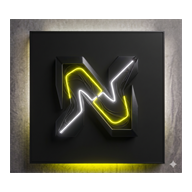

Nexus Chat
Mensajería en tiempo real, hecha en Kotlin.
Nexus Chat es una aplicación de mensajería moderna para Android: fluida, segura y en tiempo real. Conversaciones organizadas por canales, perfil de usuario y diseño Material 3 con tema oscuro y claro.
- En desarrollo
- Android 7.0+ (API 24)
- Kotlin + Jetpack Compose
- Material 3
- Supabase Realtime
La app todavía no está publicada. Cuando salga, aquí encontrarás el botón de descarga directa (APK) y el enlace a Google Play, con el checksum de cada versión.
Autenticación
Registro e inicio de sesión seguros, gestionados con Supabase.
Tiempo real
Envío y recepción de mensajes instantáneos, sin recargar nada.
Canales
Conversaciones organizadas por canales para cada tema o equipo.
Perfil
Personaliza tu información de usuario y tu presencia en la app.
Material 3
Interfaz moderna con tema oscuro y claro, adaptada a cada pantalla.
MVVM
Arquitectura con ViewModel y Repository: estado estable y testeable.
Con qué está hecho
- Kotlin
- Jetpack Compose
- Material 3
- Supabase (GoTrue · PostgREST · Realtime)
- Retrofit + OkHttp
- Kotlinx Serialization
- MVVM + Repository
La API del servicio vive en nexxus-api.duckdns.org.